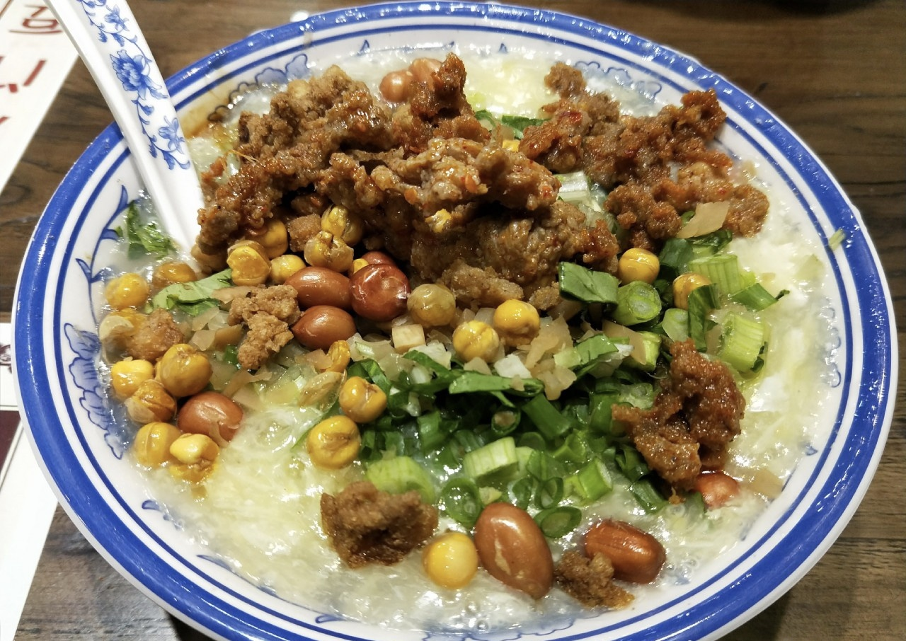

《故都食物百咏》中称：“豆腐新鲜卤汁肥，一瓯隽味趁朝晖。分明细嫩真同脑，食罢居然鼓腹旧。”还注说豆腐脑最佳之处在于细嫩如脑，才名副其实。它的口味应咸淡适口，细嫩鲜美，并有蒜香味儿。豆腐脑除浇咸卤之外，还有一种甜豆腐脑，它用白糖加水熬开，勾淀粉的溜芡，上撒切碎的金糕、青梅和瓜仁。

乐山豆腐脑是四川乐山特色风味小吃之一，豆花上有深红的辣椒配着翠绿香菜或芹菜，色香味俱全。其制作方法与传统意义上的开封豆腐脑有本质的区别，乐山豆腐脑不是以豆花为主，而是以绝对美味的汤汁勾芡而成的汤头为主。用味精，鸡精，大头菜颗粒，老抽，（密料）炒黄豆或炒花生米作底，勺上大半碗的用骨头汤勾芡的淀粉浓汁，在用平勺削几片雪白的豆花放在浓汁之上，让其漂浮，上面再放上芹菜和熟油辣椒，一碗美味可口的乐山豆腐脑就呈现在眼前了。